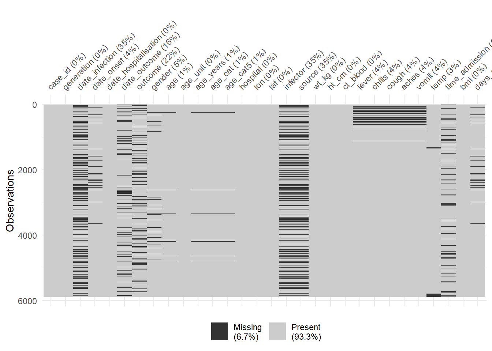
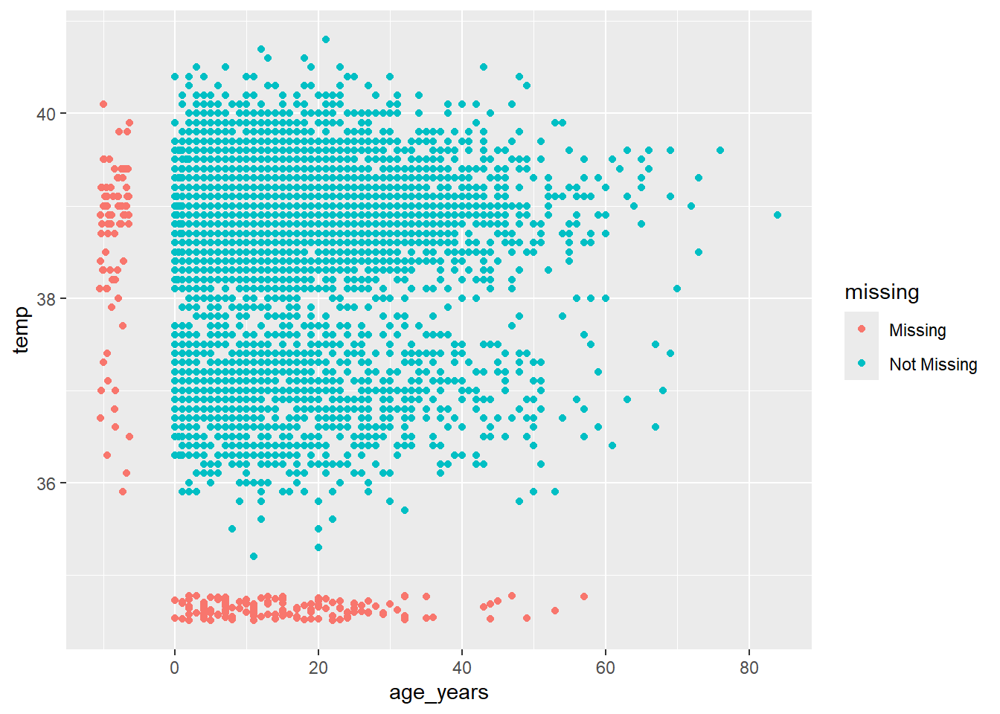

NA
NULL
NaN
Inf
is.na()
!is.na()
na.omit()
drop_na()
na.rm = TRUE
ggplot()
This page will cover how to:
This code chunk shows the loading of packages required for the analyses. In this handbook we emphasize p_load() from pacman, which installs the package if necessary and loads it for use. You can also load installed packages with library() from base R. See the page on R basics for more information on R packages.
p_load()
library()
pacman::p_load( rio, # import/export tidyverse, # data mgmt and viz naniar, # assess and visualize missingness mice # missing data imputation )
We import the dataset of cases from a simulated Ebola epidemic. If you want to follow along, click to download the “clean” linelist (as .rds file). Import your data with the import() function from the rio package (it accepts many file types like .xlsx, .rds, .csv - see the Import and export page for details).
import()
# import the linelist linelist <- import("linelist_cleaned.rds")
The first 50 rows of the linelist are displayed below.
When importing your data, be aware of values that should be classified as missing. For example, 99, 999, “Missing”, blank cells (““), or cells with an empty space (” “). You can convert these to NA (R’s version of missing data) during the data import command. See the page on importing page section on Missing data for details, as the exact syntax varies by file type.
Below we explore ways that missingness is presented and assessed in R, along with some adjacent values and functions.
In R, missing values are represented by a reserved (special) value - NA. Note that this is typed without quotes. “NA” is different and is just a normal character value (also a Beatles lyric from the song Hey Jude).
Your data may have other ways of representing missingness, such as “99”, or “Missing”, or “Unknown” - you may even have empty character value “” which looks “blank”, or a single space ” “. Be aware of these and consider whether to convert them to NA during import or during data cleaning with na_if().
na_if()
In your data cleaning, you may also want to convert the other way - changing all NA to “Missing” or similar with replace_na() or with fct_explicit_na() for factors.
replace_na()
fct_explicit_na()
Most of the time, NA represents a missing value and everything works fine. However, in some circumstances you may encounter the need for variations of NA specific to an object class (character, numeric, etc). This will be rare, but you should be aware. The typical scenario for this is when creating a new column with the dplyr function case_when(). As described in the Cleaning data and core functions page, this function evaluates every row in the data frame, assess whether the rows meets specified logical criteria (right side of the code), and assigns the correct new value (left side of the code). Importantly: all values on the right side must be the same class.
case_when()
linelist <- linelist %>% # Create new "age_years" column from "age" column mutate(age_years = case_when( age_unit == "years" ~ age, # if age is given in years, assign original value age_unit == "months" ~ age/12, # if age is given in months, divide by 12 is.na(age_unit) ~ age, # if age UNIT is missing, assume years TRUE ~ NA_real_)) # any other circumstance, assign missing
If you want NA on the right side, you may need to specify one of the special NA options listed below. If the other right side values are character, consider using “Missing” instead or otherwise use NA_character_. If they are all numeric, use NA_real_. If they are all dates or logical, you can use NA.
NA_character_
NA_real_
Again, it is not likely you will encounter these variations unless you are using case_when() to create a new column. See the R documentation on NA for more information.
NULL is another reserved value in R. It is the logical representation of a statement that is neither true nor false. It is returned by expressions or functions whose values are undefined. Generally do not assign NULL as a value, unless writing functions or perhaps writing a shiny app to return NULL in specific scenarios.
Null-ness can be assessed using is.null() and conversion can made with as.null().
is.null()
as.null()
See this blog post on the difference between NULL and NA.
Impossible values are represented by the special value NaN. An example of this is when you force R to divide 0 by 0. You can assess this with is.nan(). You may also encounter complementary functions including is.infinite() and is.finite().
is.nan()
is.infinite()
is.finite()
Inf represents an infinite value, such as when you divide a number by 0.
As an example of how this might impact your work: let’s say you have a vector/column z that contains these values: z <- c(1, 22, NA, Inf, NaN, 5).
z
z <- c(1, 22, NA, Inf, NaN, 5)
If you want to use max() on the column to find the highest value, you can use the na.rm = TRUE to remove the NA from the calculation, but the Inf and NaN remain and Inf will be returned. To resolve this, you can use brackets [ ] and is.finite() to subset such that only finite values are used for the calculation: max(z[is.finite(z)]).
max()
[ ]
max(z[is.finite(z)])
z <- c(1, 22, NA, Inf, NaN, 5) max(z) # returns NA max(z, na.rm=T) # returns Inf max(z[is.finite(z)]) # returns 22
5 / 0
0 / 0
5 / NA
5 / Inf |
|
| "logical"
| "numeric"
“NAs introduced by coercion” is a common warning message. This can happen if you attempt to make an illegal conversion like inserting a character value into a vector that is otherwise numeric.
as.numeric(c("10", "20", "thirty", "40"))
Warning: NAs introduced by coercion
[1] 10 20 NA 40
NULL is ignored in a vector.
my_vector <- c(25, NA, 10, NULL) # define my_vector # print
[1] 25 NA 10
Variance of one number results in NA.
var(22)
[1] NA
The following are useful base R functions when assessing or handling missing values:
Use is.na()to identify missing values, or use its opposite (with ! in front) to identify non-missing values. These both return a logical value (TRUE or FALSE). Remember that you can sum() the resulting vector to count the number TRUE, e.g. sum(is.na(linelist$date_outcome)).
!
TRUE
FALSE
sum()
sum(is.na(linelist$date_outcome))
my_vector <- c(1, 4, 56, NA, 5, NA, 22) is.na(my_vector)
[1] FALSE FALSE FALSE TRUE FALSE TRUE FALSE
!is.na(my_vector)
[1] TRUE TRUE TRUE FALSE TRUE FALSE TRUE
sum(is.na(my_vector))
[1] 2
This function, if applied to a data frame, will remove rows with any missing values. It is also from base R. If applied to a vector, it will remove NA values from the vector it is applied to. For example:
na.omit(my_vector)
[1] 1 4 56 5 22 attr(,"na.action") [1] 4 6 attr(,"class") [1] "omit"
This is a tidyr function that is useful in a data cleaning pipeline. If run with the parentheses empty, it removes rows with any missing values. If column names are specified in the parentheses, rows with missing values in those columns will be dropped. You can also use “tidyselect” syntax to specify the columns.
linelist %>% drop_na(case_id, date_onset, age) # drops rows missing values for any of these columns
When you run a mathematical function such as max(), min(), sum() or mean(), if there are any NA values present the returned value will be NA. This default behavior is intentional, so that you are alerted if any of your data are missing.
min()
mean()
You can avoid this by removing missing values from the calculation. To do this, include the argument na.rm = TRUE (“na.rm” stands for “remove NA”).
my_vector <- c(1, 4, 56, NA, 5, NA, 22) mean(my_vector)
mean(my_vector, na.rm = TRUE)
[1] 17.6
You can use the package naniar to assess and visualize missingness in the data frame linelist.
linelist
# install and/or load package pacman::p_load(naniar)
To find the percent of all values that are missing use pct_miss(). Use n_miss() to get the number of missing values.
pct_miss()
n_miss()
# percent of ALL data frame values that are missing pct_miss(linelist)
[1] 6.688745
The two functions below return the percent of rows with any missing value, or that are entirely complete, respectively. Remember that NA means missing, and that `"" or " " will not be counted as missing.
""
" "
# Percent of rows with any value missing pct_miss_case(linelist) # use n_complete() for counts
[1] 69.12364
# Percent of rows that are complete (no values missing) pct_complete_case(linelist) # use n_complete() for counts
[1] 30.87636
The gg_miss_var() function will show you the number (or %) of missing values in each column. A few nuances:
gg_miss_var()
facet =
show_pct = TRUE
+ labs(...)
gg_miss_var(linelist, show_pct = TRUE)
Here the data are piped %>% into the function. The facet = argument is also used to split the data.
%>%
linelist %>% gg_miss_var(show_pct = TRUE, facet = outcome)
You can use vis_miss() to visualize the data frame as a heatmap, showing whether each value is missing or not. You can also select() certain columns from the data frame and provide only those columns to the function.
vis_miss()
select()
# Heatplot of missingness across the entire data frame vis_miss(linelist)

How do you visualize something that is not there? By default, ggplot() removes points with missing values from plots.
How do you visualize something that is not there??? By default, ggplot() removes points with missing values from plots.
naniar offers a solution via geom_miss_point(). When creating a scatterplot of two columns, records with one of the values missing and the other value present are shown by setting the missing values to 10% lower than the lowest value in the column, and coloring them distinctly.
geom_miss_point()
In the scatterplot below, the red dots are records where the value for one column is present but the value for the other column is missing. This allows you to see the distribution of missing values in relation to the non-missing values.
ggplot( data = linelist, mapping = aes(x = age_years, y = temp) ) + geom_miss_point()

To assess missingness in the data frame stratified by another column, consider gg_miss_fct(), which returns a heatmap of percent missingness in the data frame by a factor/categorical (or date) column:
gg_miss_fct()
gg_miss_fct(linelist, age_cat5)
This function can also be used with a date column to see how missingness has changed over time:
gg_miss_fct(linelist, date_onset)
Warning: Removed 29 rows containing missing values or values outside the scale range (`geom_tile()`).
Another way to visualize missingness in one column by values in a second column is using the “shadow” that naniar can create. bind_shadow() creates a binary NA/not NA column for every existing column, and binds all these new columns to the original dataset with the appendix “_NA”. This doubles the number of columns - see below:
bind_shadow()
shadowed_linelist <- linelist %>% bind_shadow() names(shadowed_linelist)
[1] "case_id" "generation" [3] "date_infection" "date_onset" [5] "date_hospitalisation" "date_outcome" [7] "outcome" "gender" [9] "age" "age_unit" [11] "age_years" "age_cat" [13] "age_cat5" "hospital" [15] "lon" "lat" [17] "infector" "source" [19] "wt_kg" "ht_cm" [21] "ct_blood" "fever" [23] "chills" "cough" [25] "aches" "vomit" [27] "temp" "time_admission" [29] "bmi" "days_onset_hosp" [31] "case_id_NA" "generation_NA" [33] "date_infection_NA" "date_onset_NA" [35] "date_hospitalisation_NA" "date_outcome_NA" [37] "outcome_NA" "gender_NA" [39] "age_NA" "age_unit_NA" [41] "age_years_NA" "age_cat_NA" [43] "age_cat5_NA" "hospital_NA" [45] "lon_NA" "lat_NA" [47] "infector_NA" "source_NA" [49] "wt_kg_NA" "ht_cm_NA" [51] "ct_blood_NA" "fever_NA" [53] "chills_NA" "cough_NA" [55] "aches_NA" "vomit_NA" [57] "temp_NA" "time_admission_NA" [59] "bmi_NA" "days_onset_hosp_NA"
These “shadow” columns can be used to plot the proportion of values that are missing, by any another column.
For example, the plot below shows the proportion of records missing days_onset_hosp (number of days from symptom onset to hospitalisation), by that record’s value in date_hospitalisation. Essentially, you are plotting the density of the x-axis column, but stratifying the results (color =) by a shadow column of interest. This analysis works best if the x-axis is a numeric or date column.
days_onset_hosp
date_hospitalisation
color =
ggplot(data = shadowed_linelist, # data frame with shadow columns mapping = aes(x = date_hospitalisation, # numeric or date column colour = age_years_NA)) + # shadow column of interest geom_density() # plots the density curves
You can also use these “shadow” columns to stratify a statistical summary, as shown below:
linelist %>% bind_shadow() %>% # create the shows cols group_by(date_outcome_NA) %>% # shadow col for stratifying summarise(across( .cols = age_years, # variable of interest for calculations .fns = list("mean" = mean, # stats to calculate "sd" = sd, "var" = var, "min" = min, "max" = max), na.rm = TRUE)) # other arguments for the stat calculations
Warning: There was 1 warning in `summarise()`. ℹ In argument: `across(...)`. ℹ In group 1: `date_outcome_NA = !NA`. Caused by warning: ! The `...` argument of `across()` is deprecated as of dplyr 1.1.0. Supply arguments directly to `.fns` through an anonymous function instead. # Previously across(a:b, mean, na.rm = TRUE) # Now across(a:b, \(x) mean(x, na.rm = TRUE))
# A tibble: 2 × 6 date_outcome_NA age_years_mean age_years_sd age_years_var age_years_min <fct> <dbl> <dbl> <dbl> <dbl> 1 !NA 16.0 12.6 158. 0 2 NA 16.2 12.9 167. 0 # ℹ 1 more variable: age_years_max <dbl>
An alternative way to plot the proportion of a column’s values that are missing over time is shown below. It does not involve naniar. This example shows percent of weekly observations that are missing).
Below, we take the linelist, add a new column for week, group the data by week, and then calculate the percent of that week’s records where the value is missing. (note: if you want % of 7 days the calculation would be slightly different).
outcome_missing <- linelist %>% mutate(week = lubridate::floor_date(date_onset, "week")) %>% # create new week column group_by(week) %>% # group the rows by week summarise( # summarize each week n_obs = n(), # number of records outcome_missing = sum(is.na(outcome) | outcome == ""), # number of records missing the value outcome_p_miss = outcome_missing / n_obs, # proportion of records missing the value outcome_dead = sum(outcome == "Death", na.rm=T), # number of records as dead outcome_p_dead = outcome_dead / n_obs) %>% # proportion of records as dead tidyr::pivot_longer(-week, names_to = "statistic") %>% # pivot all columns except week, to long format for ggplot filter(stringr::str_detect(statistic, "_p_")) # keep only the proportion values
Then we plot the proportion missing as a line, by week. The ggplot basics page if you are unfamiliar with the ggplot2 plotting package.
ggplot(data = outcome_missing)+ geom_line( mapping = aes(x = week, y = value, group = statistic, color = statistic), size = 2, stat = "identity")+ labs(title = "Weekly outcomes", x = "Week", y = "Proportion of weekly records") + scale_color_discrete( name = "", labels = c("Died", "Missing outcome"))+ scale_y_continuous(breaks = c(seq(0,1,0.1)))+ theme_minimal()+ theme(legend.position = "bottom")
To quickly remove rows with missing values, use the dplyr function drop_na().
The original linelist has nrow(linelist) rows. The adjusted number of rows is shown below:
nrow(linelist)
linelist %>% drop_na() %>% # remove rows with ANY missing values nrow()
[1] 1818
You can specify to drop rows with missingness in certain columns:
linelist %>% drop_na(date_onset) %>% # remove rows missing date_onset nrow()
[1] 5632
You can list columns one after the other, or use “tidyselect” helper functions:
linelist %>% drop_na(contains("date")) %>% # remove rows missing values in any "date" column nrow()
[1] 3029
It is often wise to report the number of values excluded from a plot in a caption. Below is an example:
In ggplot(), you can add labs() and within it a caption =. In the caption, you can use str_glue() from stringr package to paste values together into a sentence dynamically so they will adjust to the data. An example is below:
labs()
caption =
str_glue()
\n
labs( title = "", y = "", x = "", caption = stringr::str_glue( "n = {nrow(central_data)} from Central Hospital; {nrow(central_data %>% filter(is.na(date_onset)))} cases missing date of onset and not shown.") )
Sometimes, it can be easier to save the string as an object in commands prior to the ggplot() command, and simply reference the named string object within the str_glue().
If your column of interest is a factor, use fct_explicit_na() from the forcats package to convert NA values to a character value. See more detail in the Factors page. By default, the new value is “(Missing)” but this can be adjusted via the na_level = argument.
na_level =
pacman::p_load(forcats) # load package linelist <- linelist %>% mutate(gender = fct_explicit_na(gender, na_level = "Missing"))
Warning: There was 1 warning in `mutate()`. ℹ In argument: `gender = fct_explicit_na(gender, na_level = "Missing")`. Caused by warning: ! `fct_explicit_na()` was deprecated in forcats 1.0.0. ℹ Please use `fct_na_value_to_level()` instead.
levels(linelist$gender)
[1] "f" "m" "Missing"
Sometimes, when analyzing your data, it will be important to “fill in the gaps” and impute missing data While you can always simply analyze a dataset after removing all missing values, this can cause problems in many ways. Here are two examples:
By removing all observations with missing values or variables with a large amount of missing data, you might reduce your power or ability to do some types of analysis. For example, as we discovered earlier, only a small fraction of the observations in our linelist dataset have no missing data across all of our variables. If we removed the majority of our dataset we’d be losing a lot of information! And, most of our variables have some amount of missing data–for most analysis it’s probably not reasonable to drop every variable that has a lot of missing data either.
Depending on why your data is missing, analysis of only non-missing data might lead to biased or misleading results. For example, as we learned earlier we are missing data for some patients about whether they’ve had some important symptoms like fever or cough. But, as one possibility, maybe that information wasn’t recorded for people that just obviously weren’t very sick. In that case, if we just removed these observations we’d be excluding some of the healthiest people in our dataset and that might really bias any results.
It’s important to think about why your data might be missing in addition to seeing how much is missing. Doing this can help you decide how important it might be to impute missing data, and also which method of imputing missing data might be best in your situation.
Here are three general types of missing data:
To test if your data is MCAR, you can use mcar_test from the naniar package. Note this will only work with numerical values, so you may need to convert your data before running the test.
mcar_test
If the p-value is less than or equal to 0.05, then your data is not missing completely at random.
## define variables of interest explanatory_vars <- c("gender", "fever", "chills", "cough", "aches", "vomit") #Recode linelist to replace characters with numeric linelist <- linelist %>% mutate(across( .cols = all_of(c(explanatory_vars, "outcome")), # for each column listed and "outcome" .fns = ~case_when( . %in% c("m", "yes", "Death") ~ 1, # recode male, yes and death to 1 . %in% c("f", "no", "Recover") ~ 0, # female, no and recover to 0 TRUE ~ NA_real_) # otherwise set to missing ) ) linelist %>% select(explanatory_vars, "outcome") %>% mcar_test()
Warning: Using an external vector in selections was deprecated in tidyselect 1.1.0. ℹ Please use `all_of()` or `any_of()` instead. # Was: data %>% select(explanatory_vars) # Now: data %>% select(all_of(explanatory_vars)) See <https://tidyselect.r-lib.org/reference/faq-external-vector.html>.
# A tibble: 1 × 4 statistic df p.value missing.patterns <dbl> <dbl> <dbl> <int> 1 27.9 21 0.144 7
As the p-value is greater than 0.05, we have failed to reject the null hypothesis (that the data is MCAR), and so no patterns exist in the missing data.
Missing at Random (MAR). This name is actually a bit misleading as MAR means that your data is missing in a systematic, predictable way based on the other information you have. For example, maybe every observation in our dataset with a missing value for fever was actually not recorded because every patient with chills and and aches was just assumed to have a fever so their temperature was never taken. If true, we could easily predict that every missing observation with chills and aches has a fever as well and use this information to impute our missing data. In practice, this is more of a spectrum. Maybe if a patient had both chills and aches they were more likely to have a fever as well if they didn’t have their temperature taken, but not always. This is still predictable even if it isn’t perfectly predictable. This is a common type of missing data.
Missing not at Random (MNAR). Sometimes, this is also called Not Missing at Random (NMAR). This assumes that the probability of a value being missing is NOT systematic or predictable using the other information we have but also isn’t missing randomly. In this situation data is missing for unknown reasons or for reasons you don’t have any information about. For example, in our dataset maybe information on age is missing because some very elderly patients either don’t know or refuse to say how old they are. In this situation, missing data on age is related to the value itself (and thus isn’t random) and isn’t predictable based on the other information we have. MNAR is complex and often the best way of dealing with this is to try to collect more data or information about why the data is missing rather than attempt to impute it.
In general, imputing MCAR data is often fairly simple, while MNAR is very challenging if not impossible. Many of the common data imputation methods assume MAR.
Some useful packages for imputing missing data are Mmisc, missForest (which uses random forests to impute missing data), and mice (Multivariate Imputation by Chained Equations). For this section we’ll just use the mice package, which implements a variety of techniques. The maintainer of the mice package has published an online book about imputing missing data that goes into more detail here (https://stefvanbuuren.name/fimd/).
Here is the code to load the mice package:
pacman::p_load(mice)
Sometimes if you are doing a simple analysis or you have strong reason to think you can assume MCAR, you can simply set missing numerical values to the mean of that variable. Perhaps we can assume that missing temperature measurements in our dataset were either MCAR or were just normal values. Here is the code to create a new variable that replaces missing temperature values with the mean temperature value in our dataset. However, in many situations replacing data with the mean can lead to bias, so be careful.
linelist <- linelist %>% mutate(temp_replace_na_with_mean = replace_na(temp, mean(temp, na.rm = T)))
You could also do a similar process for replacing categorical data with a specific value. For our dataset, imagine you knew that all observations with a missing value for their outcome (which can be “Death” or “Recover”) were actually people that died (note: this is not actually true for this dataset):
linelist <- linelist %>% mutate(outcome_replace_na_with_death = replace_na(outcome, 1))
A somewhat more advanced method is to use some sort of statistical model to predict what a missing value is likely to be and replace it with the predicted value. Here is an example of creating predicted values for all the observations where temperature is missing, but age and fever are not, using simple linear regression using fever status and age in years as predictors. In practice you’d want to use a better model than this sort of simple approach.
simple_temperature_model_fit <- lm(temp ~ fever + age_years, data = linelist) #using our simple temperature model to predict values just for the observations where temp is missing predictions_for_missing_temps <- predict(simple_temperature_model_fit, newdata = linelist %>% filter(is.na(temp)))
Or, using the same modeling approach through the mice package to create imputed values for the missing temperature observations:
model_dataset <- linelist %>% select(temp, fever, age_years) temp_imputed <- mice(model_dataset, method = "norm.predict", seed = 1, m = 1, print = F) temp_imputed_values <- temp_imputed$imp$temp
This is the same type of approach by some more advanced methods like using the missForest package to replace missing data with predicted values. In that case, the prediction model is a random forest instead of a linear regression. You can use other types of models to do this as well. However, while this approach works well under MCAR you should be a bit careful if you believe MAR or MNAR more accurately describes your situation. The quality of your imputation will depend on how good your prediction model is and even with a very good model the variability of your imputed data may be underestimated.
Last observation carried forward (LOCF) and baseline observation carried forward (BOCF) are imputation methods for time series/longitudinal data. The idea is to take the previous observed value as a replacement for the missing data. When multiple values are missing in succession, the method searches for the last observed value.
The fill() function from the tidyr package can be used for both LOCF and BOCF imputation (however, other packages such as HMISC, zoo, and data.table also include methods for doing this). To show the fill() syntax we’ll make up a simple time series dataset containing the number of cases of a disease for each quarter of the years 2000 and 2001. However, the year value for subsequent quarters after Q1 are missing so we’ll need to impute them. The fill() junction is also demonstrated in the Pivoting data page.
fill()
#creating our simple dataset disease <- tibble::tribble( ~quarter, ~year, ~cases, "Q1", 2000, 66013, "Q2", NA, 69182, "Q3", NA, 53175, "Q4", NA, 21001, "Q1", 2001, 46036, "Q2", NA, 58842, "Q3", NA, 44568, "Q4", NA, 50197) #imputing the missing year values: disease %>% fill(year)
# A tibble: 8 × 3 quarter year cases <chr> <dbl> <dbl> 1 Q1 2000 66013 2 Q2 2000 69182 3 Q3 2000 53175 4 Q4 2000 21001 5 Q1 2001 46036 6 Q2 2001 58842 7 Q3 2001 44568 8 Q4 2001 50197
Note: make sure your data are sorted correctly before using the fill() function. fill() defaults to filling “down” but you can also impute values in different directions by changing the .direction parameter. We can make a similar dataset where the year value is recorded only at the end of the year and missing for earlier quarters:
.direction
#creating our slightly different dataset disease <- tibble::tribble( ~quarter, ~year, ~cases, "Q1", NA, 66013, "Q2", NA, 69182, "Q3", NA, 53175, "Q4", 2000, 21001, "Q1", NA, 46036, "Q2", NA, 58842, "Q3", NA, 44568, "Q4", 2001, 50197) #imputing the missing year values in the "up" direction: disease %>% fill(year, .direction = "up")
In this example, LOCF and BOCF are clearly the right things to do, but in more complicated situations it may be harder to decide if these methods are appropriate. For example, you may have missing laboratory values for a hospital patient after the first day. Sometimes, this can mean the lab values didn’t change…but it could also mean the patient recovered and their values would be very different after the first day!
Use these methods with caution.
The online book we mentioned earlier by the author of the mice package (https://stefvanbuuren.name/fimd/) contains a detailed explanation of multiple imputation and why you’d want to use it. But, here is a basic explanation of the method:
When you do multiple imputation, you create multiple datasets with the missing values imputed to plausible data values (depending on your research data you might want to create more or less of these imputed datasets, but the mice package sets the default number to 5). The difference is that rather than a single, specific value each imputed value is drawn from an estimated distribution (so it includes some randomness). As a result, each of these datasets will have slightly different different imputed values (however, the non-missing data will be the same in each of these imputed datasets). You still use some sort of predictive model to do the imputation in each of these new datasets (mice has many options for prediction methods including Predictive Mean Matching, logistic regression, and random forest) but the mice package can take care of many of the modeling details.
In this example, LOCF and BOCF are clearly the right things to do, but in more complicated situations it may be harder to decide if these methods are appropriate. For example, you may have missing laboratory values for a hospital patient after the first day. Sometimes, this can mean the lab values didn’t change…but it could also mean the patient recovered and their values would be very different after the first day! Use these methods with caution.
Then, once you have created these new imputed datasets, you can apply then apply whatever statistical model or analysis you were planning to do for each of these new imputed datasets and pool the results of these models together. This works very well to reduce bias in both MCAR and many MAR settings and often results in more accurate standard error estimates.
Here is an example of applying the Multiple Imputation process to predict temperature in our linelist dataset using a age and fever status (our simplified model_dataset from above):
model_dataset
# imputing missing values for all variables in our model_dataset, and creating 10 new imputed datasets multiple_imputation = mice( model_dataset, seed = 1, m = 10, print = FALSE ) model_fit <- with(multiple_imputation, lm(temp ~ age_years + fever)) base::summary(mice::pool(model_fit))
term estimate std.error statistic df p.value 1 (Intercept) 3.696900e+01 0.0154162569 2398.0527445 2176.7305 0.0000000 2 age_years 4.481642e-04 0.0005023468 0.8921411 1438.8255 0.3724665 3 fever 2.044250e+00 0.0153006140 133.6057671 953.2349 0.0000000
Here we used the mice default method of imputation, which is Predictive Mean Matching. We then used these imputed datasets to separately estimate and then pool results from simple linear regressions on each of these datasets. There are many details we’ve glossed over and many settings you can adjust during the Multiple Imputation process while using the mice package. For example, you won’t always have numerical data and might need to use other imputation methods (you can still use the mice package for many other types of data and methods). But, for a more robust analysis when missing data is a significant concern, Multiple Imputation is good solution that isn’t always much more work than doing a complete case analysis.
Vignette on the naniar package
Gallery of missing value visualizations
Online book about multiple imputation in R by the maintainer of the mice package